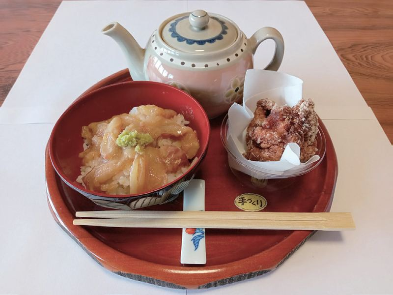
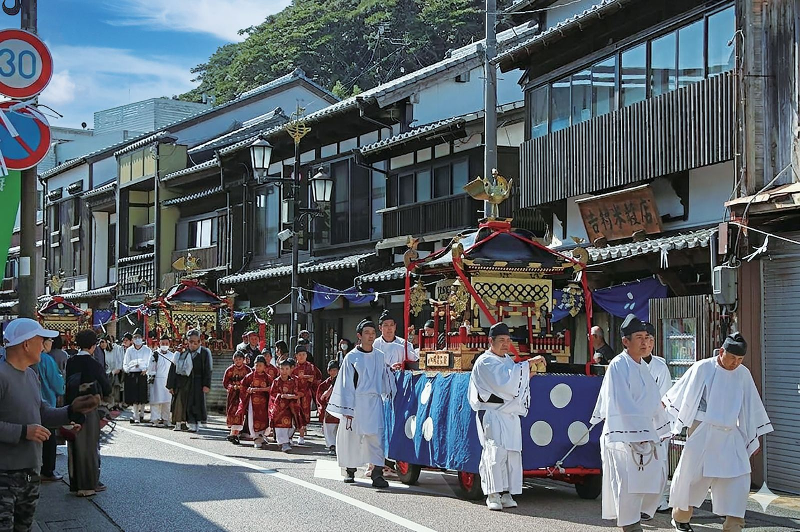
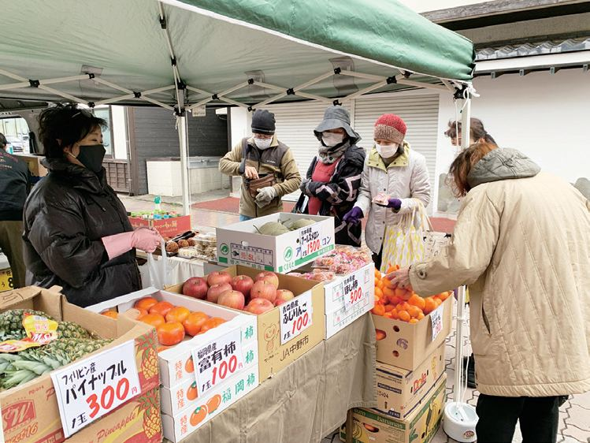
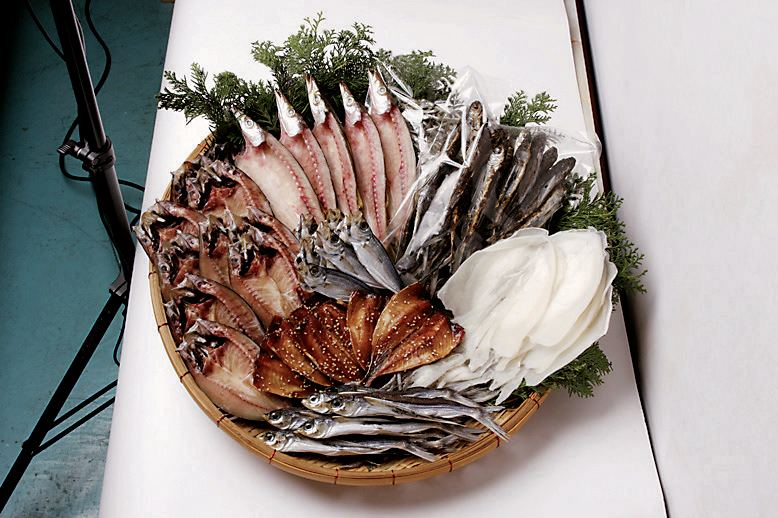
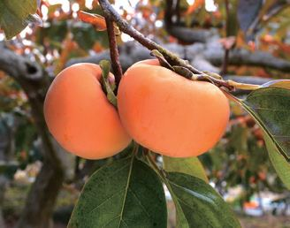
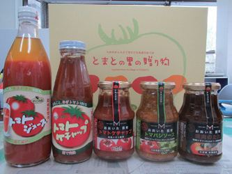
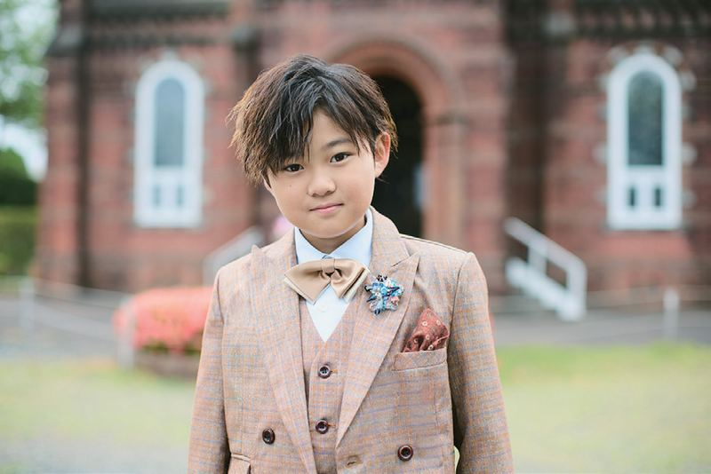
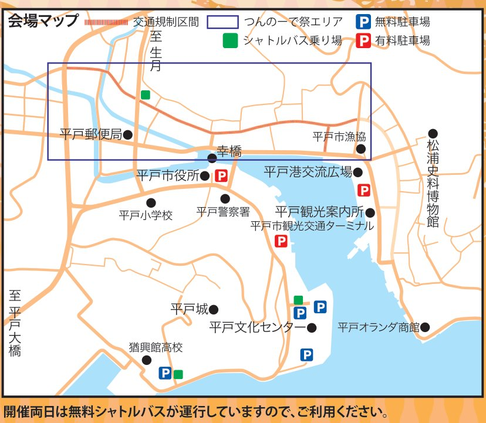

平戸自慢の逸品料理38店舗
平戸産の農水産物や加工品を使った自慢の一品を、市内の飲食店と団体が商店街の店舗とテントで販売します。平戸なつ香鯛茶漬、中華ちまきなど、子どもから大人まで楽しめるメニューです。

平戸の食と伝統が集う2日間。
平戸の秋祭り「平戸おくんち」にあわせて、城下の商店街が歩行者天国に。平戸の食材を使った逸品料理、軽トラ市、物産市、ステージが並びます。「つんのーで」は平戸の言葉で「連れ立って」。家族や友だちと、つんのーで来てください。

平戸産の農水産物や加工品を使った自慢の一品を、市内の飲食店と団体が商店街の店舗とテントで販売します。平戸なつ香鯛茶漬、中華ちまきなど、子どもから大人まで楽しめるメニューです。


毎月第4日曜日の軽トラ市を、今回は2日間開催。平戸の秋を代表する「あご」をはじめ、平戸で獲れた農水産物や加工品が軽トラックの荷台に並びます。


平戸市と交流のある香川県善通寺市、大分県竹田市・臼杵市、福岡県うきは市から、野菜・果物・加工品が届きます。数に限りがあるので、お早めに。

平戸市田平町出身、全日本歌唱力選手権「歌唱王」第13回優勝の西山琳久さんの歌謡ショー（24日）。田助ハイヤ節の生演奏、YOSAKOI、ダンス、バンドライブも。
※イベント内容・日程・時間は変更になる場合があります。
焼き上がりは11:00・13:00・15:00の予定。牛蒡餅のつかみ取りやイベントミッションも。ネオンがきらめくハロウィン仕様の店内で。
問合せ：牛蒡餅本舗 熊屋 0950-22-2046
会場を歩き回る4人の偉人のうち3人に会ってスタンプを押してもらうと、本部で500円の秋まつりチケットがもらえます。ラリー用紙は各インフォメーションで。
会場内の参加店で500円買うごとに抽選補助券を1枚。2枚でガラポン1回。参加店は当日会場で配るパンフレットに載っています。
同じ週末は、亀岡神社例大祭「平戸おくんち」。25日（日）は大名行列を見てから、そのまま商店街へ。
| 10/24（土） | 事始神事［宵祭］14:00〜 亀岡神社 |
|---|---|
| 10/25（日） | 御神幸祭 8:30〜（大名行列出発 10:00〜） |
| 10/26（月） | 大々神楽 11:00〜（平戸神楽1番）、13:00〜（2番以降） 亀岡神社 |
| 10/27（火） | 例大祭 10:00〜、献茶祭 13:00〜 亀岡神社 |
国指定重要無形民俗文化財「平戸神楽」の大大神楽（全24番）は、26日11時からの亀岡神社例大祭でのみ見られます。
